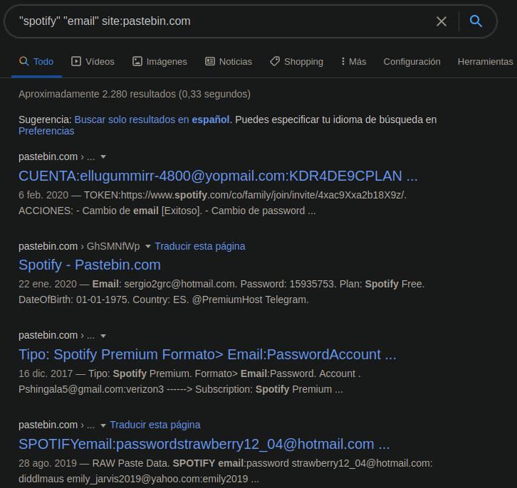

¿Qué es el Footprinting?
El footprinting es una técnica práctica de reconocimiento que se utiliza para intentar recabar toda la información pública posible sobre una empresa. Dicha información puede haber sido publicada conscientemente por la empresa a auditar o haberse publicado de manera involuntaria.
Este es el proceso que normalmente se utiliza primero dentro de la ciberseguridad para llevar a cabo un informe de evaluación que se utilizará más adelante.
Tipos de Footprinting
- Activo: se interactúa directamente con el objetivo.
- Pasivo: se recopila toda la información posible sin entrar en contacto directo con el objetivo.
¿Cuándo se utiliza?
Este procedimiento representa la primera fase de auditoría. Se usa cuando se tiene una empresa u organización como objetivo, con el fin de recolectar información para buscar posibles vulnerabilidades y facilitar el acceso a sus sistemas.
¿Cómo se hace Footprinting?
Los hackers y ciberdelincuentes lo hacen de manera consciente usando todas las vías posibles para acceder al mayor número de información sobre el objetivo. Algunos comandos y herramientas útiles son:

whois + DOMINIO— información del registrante del dominiowhatweb + DOMINIO— tecnologías usadas en la webdnsenum + DOMINIO— enumeración DNSping + DOMINIO— verificar conectividad e IPdig + DOMINIO— consultas DNS avanzadasdirb + DOMINIO + diccionario— descubrimiento de directoriosnslookup— consultas DNS- Redes sociales y búsquedas en Google
- Fuzzers como Wfuzz, Bed, etc.
Tipo de información que se obtiene
- Nombre de dominio e IPs
- Registros Whois e información de DNS
- Correos electrónicos y números de teléfono
- Sistema operativo utilizado
- Mapa de red, URLs y cortafuegos

Herramientas complementarias
Google Hacking: técnicas o parámetros de Google para conseguir búsquedas avanzadas o precisas.
Maltego: herramienta para encontrar información sobre personas, dominios, emails, dispositivos IoT, servidores, documentos y empresas en internet.
theHarvester: permite obtener información sobre un objetivo concreto y exportarla a un archivo HTML o XML.


Footprinting vs Fingerprinting
Con el Footprinting se obtiene información a través de búsquedas en internet y redes sociales. Con el Fingerprinting se consigue la información interactuando directamente con el sistema o servicio del objetivo, lo que puede ser ilegal en algunos países.
Conclusión
El Footprinting es una buena manera de preparar un documento con toda la información que será útil para llevar a cabo un pentest, asegurando no ir totalmente a ciegas en el trabajo a realizar.